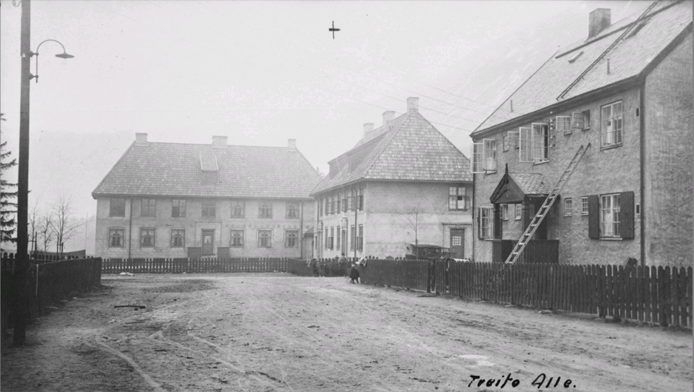

Hustype 36
Fondvegg i Tveito Allè
Olavs gate 3 og 5 fungerer som fondvegg i Tveito Allè. Husene er av type 36.

I forgrunnen sees det siste huset på høyre side i Tveito Allè mot øst. I bakgrunnen sees Olavs gate 3 og 5, hustype 36.
Foto:
Ukjent / NIA
Mer informasjon
Gjeldende
kommunedelplan for Rjukan